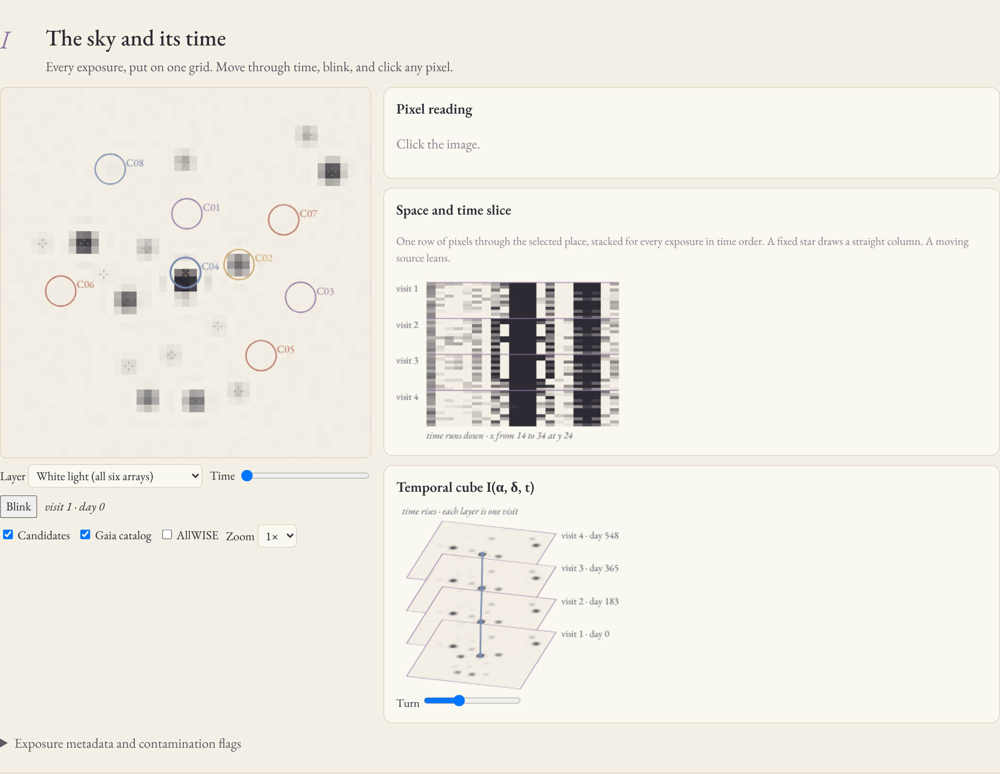
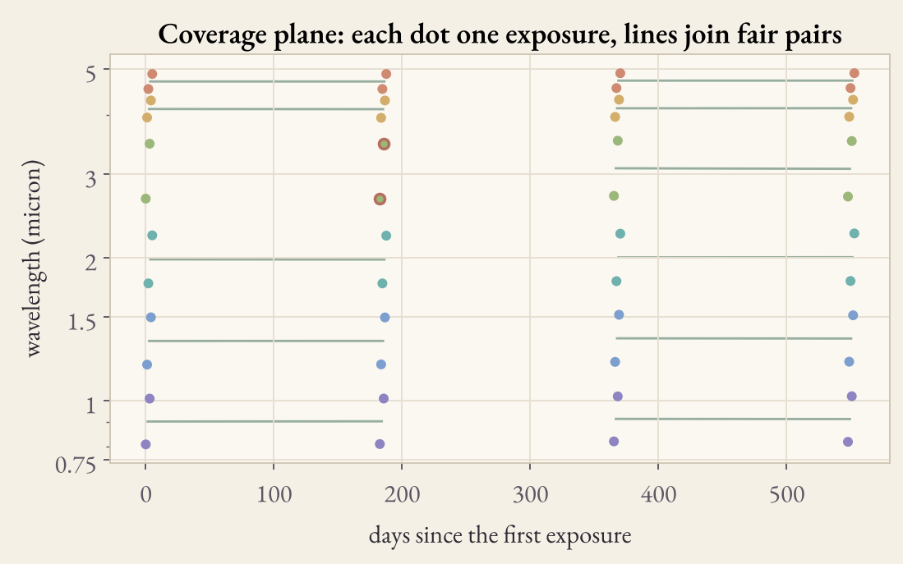
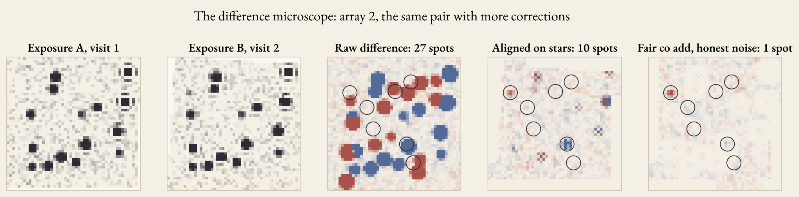
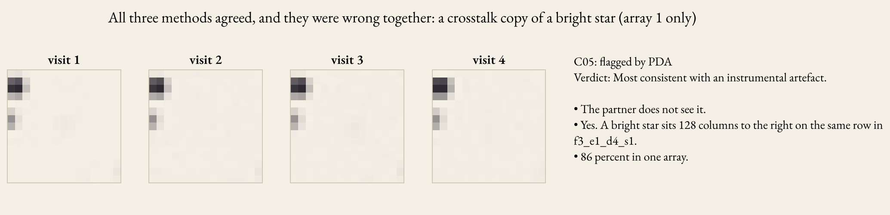
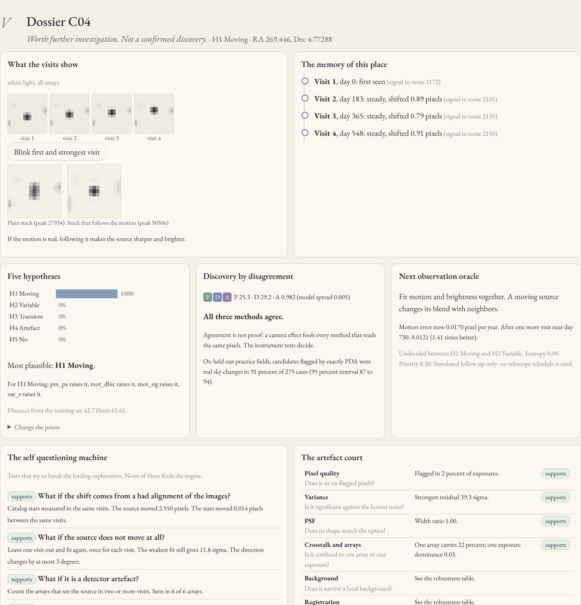
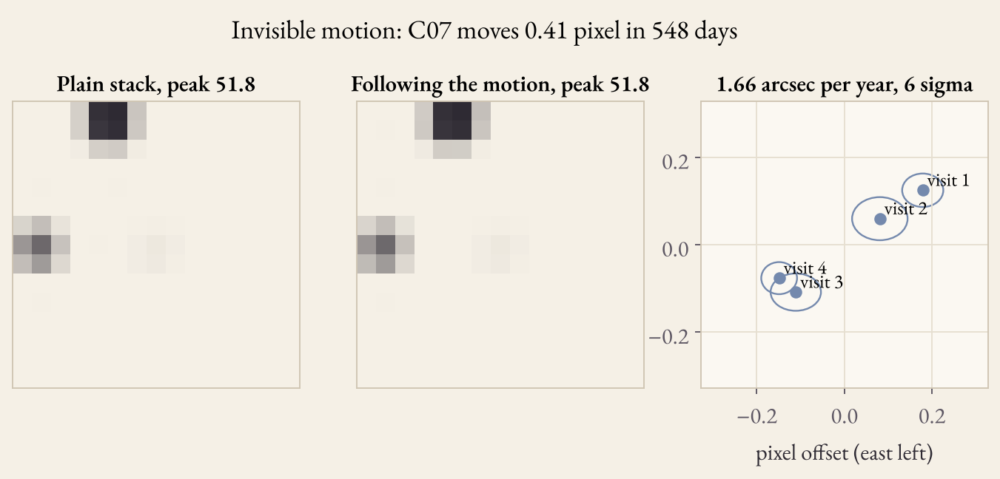
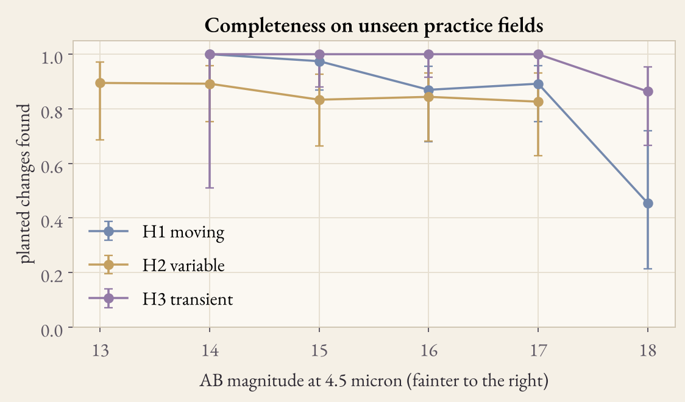
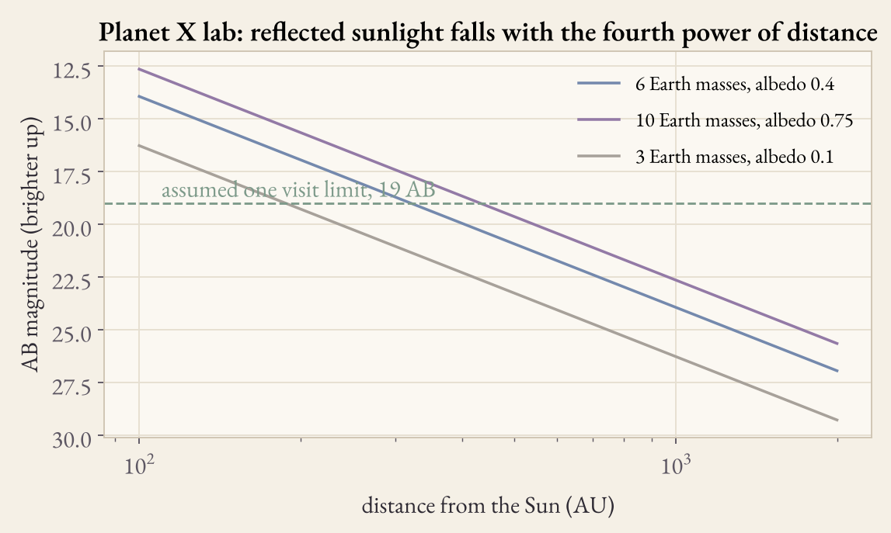
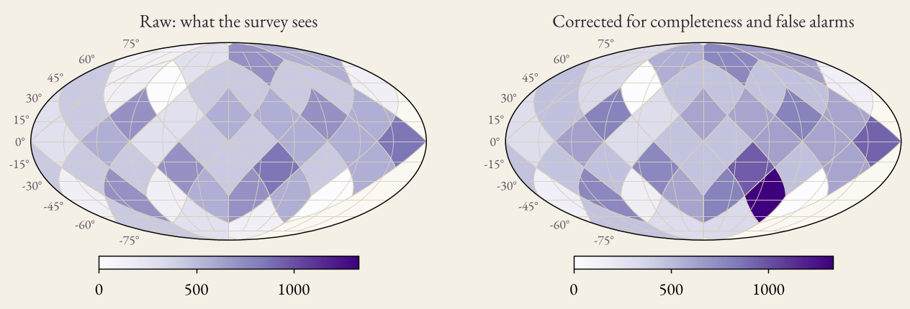

NASA SPACE APPS · PLANET X AND SPHEREx
Same sky. Same color.
Then ask what changed.
An observatory that finds change in the SPHEREx infrared sky, and then tries to prove itself wrong.
3 detectors
5 hypotheses
400 test fields
61 tests
For watchers of the changing sky, like Radhagobinda Chandra of Jessore, and for anyone who wants to check a claim.

pritidipadas.github.io/nakshatra-chronus · github.com/PRITIDIPADAS/nakshatra-chronus
A linear variable filter gives every pixel its own color, 0.75 to 5 micron in 102 channels. Surveys 3 and 4 sit half a channel away.
A steady star can look 1 to 2 percent brighter from color alone. For a faint mover like a distant planet, false change can hide it or fake it.
So CHRONOS compares only fair pairs: same array, color within a third of a channel, one release.


Nakshatra CHRONOS · NASA Space Apps · Planet X and SPHEREx · 2 of 7
Fair pairs
P · D · A
Candidates
Five hypotheses
Tests that try to break it
Evidence report
Sources in each visit, linked, with motion and brightness floors measured on stars.
Fair co adds of two visits; the resampling error is measured, not guessed.
Isolation forest, local outlier factor and robust covariance rank each pixel in time.
34%
of changes seen by one method are real
77%
seen by two
91%
seen by all three
5%
of changes seen only by the anomaly model are real; the rest is the camera
512 candidates from 109 practice fields the engine never saw. Agreement is not proof: a crosstalk copy fooled all three, and the instrument tests caught it.
Nakshatra CHRONOS · NASA Space Apps · Planet X and SPHEREx · 3 of 7
Moving, variable, transient, artefact, or no change. Calibrated.
Star drift, one visit left out, the array behind the dichroic, crosstalk.
The whole analysis again under eleven other reasonable choices.
Motion, photometry, instrument. Disagreement stays on the record.


Nakshatra CHRONOS · NASA Space Apps · Planet X and SPHEREx · 4 of 7
98.8%
right when the engine decides, 109 unseen fields
0.007
calibration error: a stated 80 percent is right 80 percent of the time
117 of 117
glitches, hot pixels and crosstalk copies rejected
0 of 840
catalog stars with no motion called moving
0.375
false candidates per empty field
6 sigma
motion of 0.4 pixel, invisible to the eye


Practice sky with a hidden truth. On real QR3 files only 24 percent of planted sources were found, and the practice engine said unknown, not a false claim.
Nakshatra CHRONOS · NASA Space Apps · Planet X and SPHEREx · 5 of 7
Rung 1
Orbits suggest an unseen mass.
Rung 2 · CHRONOS reaches here
A source that moves the right way.
Rung 3
Artefacts excluded, false alarms measured.

A screen that ranks candidates and shows why.
A citizen lab, and the story in Bangla.
A sealed record that anyone can reproduce.
Nakshatra CHRONOS · NASA Space Apps · Planet X and SPHEREx · 6 of 7

Deep tiles: 45 percent found raw. Corrected: 106 percent of the truth.
Same 16 cases for all, 4 blind repeats, Fleiss kappa.
Rubin alerts through ALeRCE, known bodies from JPL.
120 planted in real files: 29 found. Retrained engine: 12 of 17 right.
Open the live observatory.
Apache 2.0 · 73 tests
Docker · 4 notebooks
Same sky. Same color.
Then ask what changed.
pritidipadas.github.io/nakshatra-chronus · github.com/PRITIDIPADAS/nakshatra-chronus · 7 of 7